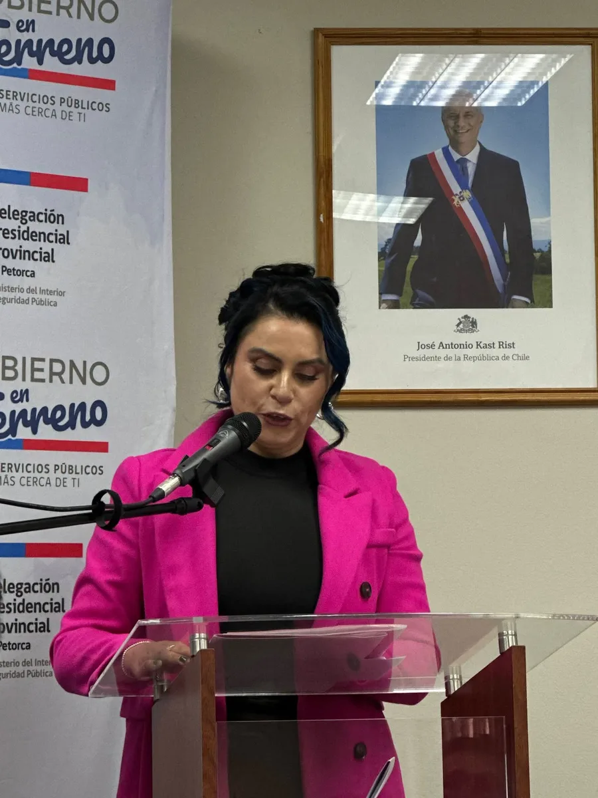

Fundadora de Matichoc
Inés Saavedra
La Maestra Chocolatera
- 2011empezó con una libreta y un coche
- 6fondos y programas de apoyo: Gobernación, Sopraval, FOSIS y PRODEMU
- 2022profesora de chocolatería para adultos y niños
- U. de Valparaísodiseño de proyectos e innovación social
Cómo empezó
Inés Saavedra, fundadora de Matichoc, inició este delicioso viaje en 2011 con su hijo Matías en coche y una libreta en mano, anotando los primeros pedidos para fechas importantes como el Día de la Madre. Lo que partió como una idea familiar fue creciendo con esfuerzo, amor y formación constante, hasta convertirse en un verdadero referente del chocolate artesanal en la región.
Reconocimientos
A lo largo de estos años, ha sido reconocida por su dedicación y talento a través de importantes fondos y programas de apoyo:
- GobernaciónFondo ORASMI
- SopravalPrograma Capital Emprendedor
- FOSISEmprendamos Avanzado Individual
- FOSISEmprendamos Grupal
- FOSISEmprendamos Feria (Expo Feria)
- PRODEMUAprendiendo a Emprender
Siempre aprendiendo
Su constante capacitación la ha llevado a profesionalizar cada aspecto de su trabajo:
- Diseño de proyectos e innovación socialUniversidad de Valparaíso, Escuela de Emprendedores Sociales
- Formación para el trabajoPrograma Jefas de Hogar
- Taller de cocteleríaPrograma Jefas de Hogar
- Manipulación de alimentos
- Contabilidad
- Formalización
- Digitalización del emprendimiento
Hoy
Además de crear chocolates irresistibles, Inés también enseña su arte en centros de formación y actividades comunitarias, formando a nuevas emprendedoras y compartiendo su sabiduría con pasión.
- 2022 – 2024Profesora de chocolatería en el Centro de Capacitación Nahuen, con cursos para adultos y niños.
- Desde 2025Capacitaciones particulares de chocolatería.
El chocolate no solo se hace con cacao, también con cariño, arte y raíces. — Inés Saavedra
Ferias y eventos de la provincia
Todos los martes y jueves en la plaza de La Liguade 8:30 a 17:00 hrs, con nuestro stand.
Y con Matichoc, Inés ha estado en los eventos más importantes de la provincia:
🎉 Aniversarios
- Aniversario de La Ligua
- Aniversario de Cabildo
- Aniversario de Petorca
🎪 Expos
- Expo Vive Papudo
- Expo La Ligua
- Expo FOSIS
🛍️ Ferias
- Cocinando con el Diablo, Petorca
- Feria de la Virgen, Cabildo
- Feria de Invierno, Cabildo
- Feria de Emprendedoras, Papudo
- Ferias de verano
🤠 Fiestas costumbristas
- Fiesta costumbrista de Catapilco
- Fiesta costumbrista y carrera a la chilena de El Llano
- Fiesta del Cabrito, Palquico